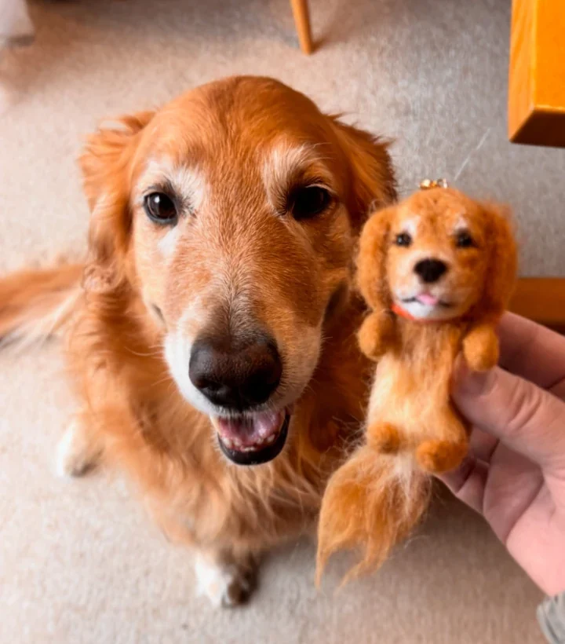
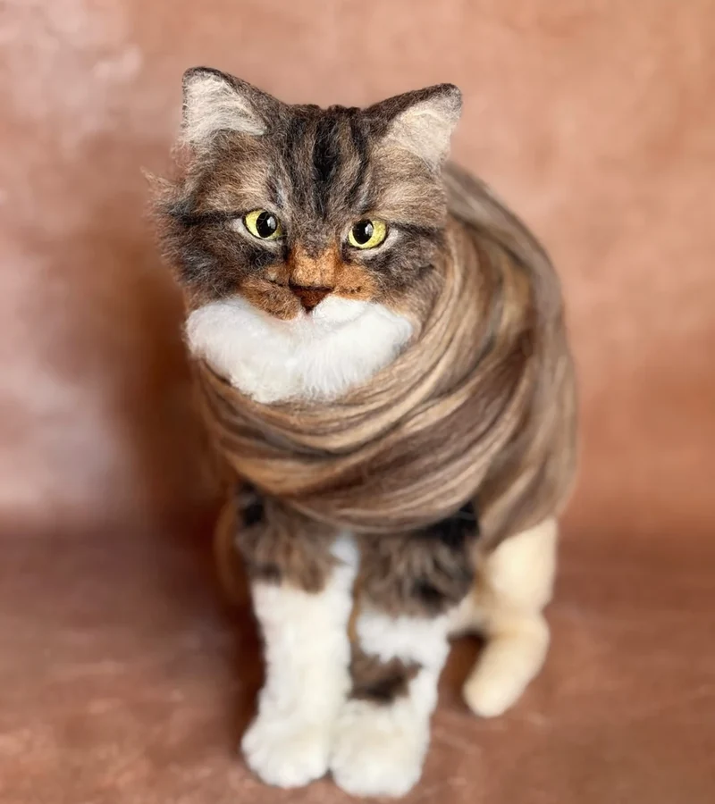

私について
おおたけいこ
長野県松本市で「もんらぼ」として活動しています。2012年に羊毛フェルトと出会い、独学で技術を身につけました。
今は、写真をもとに犬や猫の作品をお作りするほか、塩尻のカルチャー講座や、羊毛フェルトのサークル「ふわもこの会」で作る楽しさをお伝えしています。
Instagramで作品を見る

オーダーのご相談
ご希望のタイプやサイズを、InstagramのDMでお聞かせください。
おおたけいこ
長野県松本市で「もんらぼ」として活動しています。2012年に羊毛フェルトと出会い、独学で技術を身につけました。
今は、写真をもとに犬や猫の作品をお作りするほか、塩尻のカルチャー講座や、羊毛フェルトのサークル「ふわもこの会」で作る楽しさをお伝えしています。
Instagramで作品を見る

ご希望のタイプやサイズを、InstagramのDMでお聞かせください。